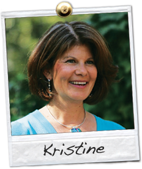

Ms. Hubner has 20+ years of occupational therapy experience, 15 of which have been in pediatrics. She worked in multiple San Francisco Bay Area public shools, developed a successful early intervention program, and worked in a private practice setting before starting her own private practice.
Ms. Hubner is a certified Hand Therapist and is certified in the Sensory Integration and Praxis Test. She is a member of Bay Area Association of Pediatric Therapists, AOTA and OTAC. She is the mother of twins. In 1987, Ms. Hubner received her Occupational Therapy degree from San Jose State University with Honors and a minor in Spanish.
Ms. Hubner has lectured about hand writing development, sensory integration, motor development and self regulation. She has taken post graduate studies in:
Comprehensive Program in Sensory Integration
Therapeutic Listening
Visual/Vestibular Assessment and Treatment
Alert Program
Handwriting Without Tears
Sensorimotor Strategies for Self Regulation
Vision Screening and Vision Rehabilitation
Assessment and Intervention for Praxis
TESTIMONIALS:
"Our dyspraxic son began therapy with Kristine shortly before turning four. She worked with him for a year. He thoroughly enjoyed himself on all of his sessions and now regularly mentions how much he misses Kristine. His rate of progress was astounding - to both our family and to our developmental pediatrician. Activities such as cutting with scissors and riding a bike that seemed an impossible dream are turning into a joyful reality. He no longer stands out in group activities such as gymnastics or swimming. We feel strongly that Kristine has given our son an invaluable gift - the gift of confidence in his abilities to conquer difficult tasks. In short, Kristine has changed our lives and for that we could not be more grateful."
----------
"Working with Kristine has been absolutely wonderful. She has an incredible way with my son; she can get him to try new things that I never thought he would try, and she has come up with a lot of ideas that have been extremely helpful. My son has had fun at every session, and he's come such a long way with Kristine's help. We feel so lucky to have found her. Even though we're thrilled that he's set to 'graduate' from O.T. next month, we'll really miss his time with Kristine!"
----------
"I enthusiastically recommend Kristine. She worked with my 4.5 year old son for 6 months on sensory processing issues. My son *loved* going to see her -- she has a fabulous personality for working with kids -- fun and friendly, while accomplishing a lot. She works out of a home office equipped with great gear and her fees are affordable based on local going rates. O.T. with Kristine really made a difference for us!"
----------
"Kristine Hubner-Levin has been a highly valued professional whom I refer students and parents to constantly. Students who have worked with her come back feeling excited and more confident about themselves. I believe she has made a tremendous difference to our students with sensory integration disorders and motor issues."
-- K. Robinson, Special Needs Coordinator, Corpus Christi School
----------
"For the past 1.5 years, Kristine has been seeing my 5.5 year old son bi-weekly for Sensory Integration issues. His specific weaknesses include fine motor skills, motor planning, self-regulation and intolerance of certain environmental stimuli such as textures, tastes, sounds, and smells which often resulted in 'meltdowns' as well as during times of transition, brushing his teeth and putting on shirts, socks or shoes. He had little to no interest in coloring, painting or using playdough, preferring television to hands-on play. Because of these weaknesses, kindergarten seemed like an insurmountable hurdle.
Due to Kristine's knowledge, experience and creative therapeutic talents, my son has made ENORMOUS gains in each area. Her therapy is engaging and child-centered. In addition, she is INCREDIBLY patient and compassionate towards children's needs and various behavioral challenges. Kristine provides material for parents/caregivers in order to deepend their understanding of their child's difficulties. Kristine also provides easy and effective strategies employable at home which aid in the transfer, or carryover, of material in the therapy room.
Because Kristine has worked in the public schools, she understands the skills children need in school and I believe, has a true desire to see children excel. She has not only helped my son develop appropriate writing skills for kindergarten, but also has boosted his confidence which is paramount to both personal and academic success."
----------
"Kristine has helped our family so much that I do not even know where to start. She is warm, knowledgeable, professional and flexible. Kristine has an implicit respect for each child she works with and treats them with a unique blend of kindness, understanding, supportiveness, expertise and firmness."
----------
"My 8 year old daughter has released so much anxiety through her sessions with Kristine. She has developed into a lovely, kind, joyful, skillful child - all traits that she possessed before but were buried beneath the fear and nervousness caused by her response to sensory stimuli."
----------
"The amount of tools in Kristine's Orinda office is not only impressive, but cover a plethora of occupational functions, all of which Kristine employs in a timely and most useful and playful manner. My daughter has tremendous fun during her sessions."
----------
"Ms. Kristine, as my daughter calls her, has earned my gratitude and my respect. She is simply the most professional, most effective pediatric practitioner whom I have had the pleasure to encounter."